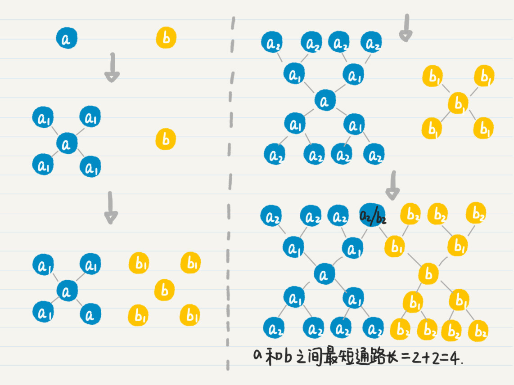
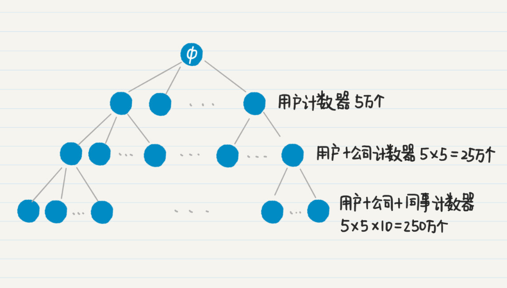
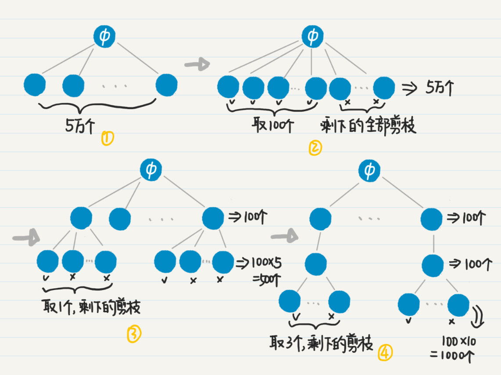

- 01 二进制：不了解计算机的源头，你学什么编程.md.html
- 02 余数：原来取余操作本身就是个哈希函数.md.html
- 03 迭代法：不用编程语言的自带函数，你会如何计算平方根？.md.html
- 04 数学归纳法：如何用数学归纳提升代码的运行效率？.md.html
- 05 递归（上）：泛化数学归纳，如何将复杂问题简单化？.md.html
- 06 递归（下）：分而治之，从归并排序到MapReduce.md.html
- 07 排列：如何让计算机学会“田忌赛马”？.md.html
- 08 组合：如何让计算机安排世界杯的赛程？.md.html
- 09 动态规划（上）：如何实现基于编辑距离的查询推荐？.md.html
- 10 动态规划（下）：如何求得状态转移方程并进行编程实现？.md.html
- 11 树的深度优先搜索（上）：如何才能高效率地查字典？.md.html
- 12 树的深度优先搜索（下）：如何才能高效率地查字典？.md.html
- 13 树的广度优先搜索（上）：人际关系的六度理论是真的吗？.md.html
- 14 树的广度优先搜索（下）：为什么双向广度优先搜索的效率更高？.md.html
- 15 从树到图：如何让计算机学会看地图？.md.html
- 16 时间和空间复杂度（上）：优化性能是否只是“纸上谈兵”？.md.html
- 17 时间和空间复杂度（下）：如何使用六个法则进行复杂度分析？.md.html
- 18 总结课：数据结构、编程语句和基础算法体现了哪些数学思想？.md.html
- 19 概率和统计：编程为什么需要概率和统计？.md.html
- 20 概率基础（上）：一篇文章帮你理解随机变量、概率分布和期望值.md.html
- 21 概率基础（下）：联合概率、条件概率和贝叶斯法则，这些概率公式究竟能做什么？.md.html
- 22 朴素贝叶斯：如何让计算机学会自动分类？.md.html
- 23 文本分类：如何区分特定类型的新闻？.md.html
- 24 语言模型：如何使用链式法则和马尔科夫假设简化概率模型？.md.html
- 25 马尔科夫模型：从PageRank到语音识别，背后是什么模型在支撑？.md.html
- 26 信息熵：如何通过几个问题，测出你对应的武侠人物？.md.html
- 27 决策树：信息增益、增益比率和基尼指数的运用.md.html
- 28 熵、信息增益和卡方：如何寻找关键特征？.md.html
- 29 归一化和标准化：各种特征如何综合才是最合理的？.md.html
- 30 统计意义（上）：如何通过显著性检验，判断你的A_B测试结果是不是巧合？.md.html
- 31 统计意义（下）：如何通过显著性检验，判断你的A_B测试结果是不是巧合？.md.html
- 32 概率统计篇答疑和总结：为什么会有欠拟合和过拟合？.md.html
- 33 线性代数：线性代数到底都讲了些什么？.md.html
- 34 向量空间模型：如何让计算机理解现实事物之间的关系？.md.html
- 35 文本检索：如何让计算机处理自然语言？.md.html
- 36 文本聚类：如何过滤冗余的新闻？.md.html
- 37 矩阵（上）：如何使用矩阵操作进行PageRank计算？.md.html
- 38 矩阵（下）：如何使用矩阵操作进行协同过滤推荐？.md.html
- 39 线性回归（上）：如何使用高斯消元求解线性方程组？.md.html
- 40 线性回归（中）：如何使用最小二乘法进行直线拟合？.md.html
- 41 线性回归（下）：如何使用最小二乘法进行效果验证？.md.html
- 42 PCA主成分分析（上）：如何利用协方差矩阵来降维？.md.html
- 43 PCA主成分分析（下）：为什么要计算协方差矩阵的特征值和特征向量？.md.html
- 44 奇异值分解：如何挖掘潜在的语义关系？.md.html
- 45 线性代数篇答疑和总结：矩阵乘法的几何意义是什么？.md.html
- 46 缓存系统：如何通过哈希表和队列实现高效访问？.md.html
- 47 搜索引擎（上）：如何通过倒排索引和向量空间模型，打造一个简单的搜索引擎？.md.html
- 48 搜索引擎（下）：如何通过查询的分类，让电商平台的搜索结果更相关？.md.html
- 49 推荐系统（上）：如何实现基于相似度的协同过滤？.md.html
- 50 推荐系统（下）：如何通过SVD分析用户和物品的矩阵？.md.html
- 51 综合应用篇答疑和总结：如何进行个性化用户画像的设计？.md.html
- 导读：程序员应该怎么学数学？.md.html
- 开篇词 作为程序员，为什么你应该学好数学？.md.html
- 数学专栏课外加餐（一） 我们为什么需要反码和补码？.md.html
- 数学专栏课外加餐（三）：程序员需要读哪些数学书？.md.html
- 数学专栏课外加餐（二） 位操作的三个应用实例.md.html
- 结束语 从数学到编程，本身就是一个很长的链条.md.html
- 捐赠
14 树的广度优先搜索（下）：为什么双向广度优先搜索的效率更高？
你好，我是黄申。
上一讲，我们通过社交好友的关系，介绍了为什么需要广度优先策略，以及如何通过队列来实现它。有了广度优先搜索，我们就可以知道某个用户的一度、二度、三度等好友是谁。不过，在社交网络中，还有一个经常碰到的问题，那就是给定两个用户，如何确定他们之间的关系有多紧密？
最直接的方法是，使用这两人是几度好友，来衡量他们关系的紧密程度。今天，我就这个问题，来聊聊广度优先策略的一种扩展：双向广度优先搜索，以及这种策略在工程中的应用。
如何更高效地求出两个用户间的最短路径？
基本的做法是，从其中一个人出发，进行广度优先搜索，看看另一个人是否在其中。如果不幸的话，两个人相距六度，那么即使是广度优先搜索，同样要达到万亿级的数量。
那究竟该如何更高效地求得两个用户的最短路径呢？我们先看看，影响效率的问题在哪里？很显然，随着社会关系的度数增加，好友数量是呈指数级增长的。所以，如果我们可以控制这种指数级的增长，那么就可以控制潜在好友的数量，达到提升效率的目的。
如何控制这种增长呢？我这里介绍一种“双向广度优先搜索”。它巧妙地运用了两个方向的广度优先搜索，大幅降低了搜索的度数。现在我就带你看下，这个方法的核心思想。
假设有两个人\(a\)、\(b\)。
- 我们首先从\(a\)出发，进行广度优先搜索，记录\(a\)的所有一度好友\(a\_{1}\)，然后看点\(b\)是否出现在集合\(a\_{1}\)中。
- 如果没有，就再从\(b\)出发，进行广度优先搜索，记录所有一度好友\(b\_{1}\)，然后看\(a\)和\(a\_{1}\)是否出现在\(b\)和\(b\_{1}\)的并集中。
- 如果没有，就回到\(a\)，继续从它出发的广度优先搜索，记录所有二度好友\(a\_{2}\)，然后看\(b\)和\(b\_{1}\)是否出现在\(a\)、\(a\_{1}\)和\(a\_{2}\)三者的并集中。
- 如果没有，就回到\(b\)，继续从它出发的广度优先搜索。
- 如此轮流下去，直到找到\(a\)的好友和\(b\)的好友的交集。
如果有交集，就表明这个交集里的点到\(a\)和\(b\)都是通路。
我们假设\(c\)在这个交集中，那么把\(a\)到\(c\)的通路长度和\(b\)到\(c\)的通路长度相加，得到的就是从\(a\)到\(b\)的最短通路长（这个命题可以用反证法证明），也就是两者为几度好友。这个过程有点复杂，我画了一张图帮助你来理解。

思路你应该都清楚了，现在我们来看看如何用代码来实现。
要想实现双向广度优先搜索，首先我们要把结点类Node稍作修改，增加一个变量degrees。这个变量是HashMap类型，用于存放从不同用户出发，到当前用户是第几度结点。比如说，当前结点是4，从结点1到结点4是3度，结点2到结点4是2度，结点3到结点4是4度，那么结点4的degrees变量存放的就是如下映射：
有了变量degrees，我们就能随时知道某个点和两个出发点各自相距多少。所以，在发现交集之后，根据交集中的点和两个出发点各自相距多少，就能很快地算出最短通路的长度。理解了这点之后，我们在原有的Node结点内增加degrees变量的定义和初始化。
public class Node {
......
public HashMap<Integer, Integer> degrees; // 存放从不同用户出发，当前用户结点是第几度
// 初始化结点
public Node(int id) {
......
degrees = new HashMap<>();
degrees.put(id, 0);
}
}
为了让双向广度优先搜索的代码可读性更好，我们可以先实现两个模块化的函数：getNextDegreeFriend和hasOverlap。函数getNextDegreeFriend是根据给定的队列，查找和起始点相距度数为指定值的所有好友。而函数hasOverlap用来判断两个集合是不是有交集。有了这些模块化的函数，双向广度优先搜索的代码就更直观了。
在函数一开始，我们先进行边界条件判断。
/**
* @Description: 通过双向广度优先搜索，查找两人之间最短通路的长度
* @param user_nodes-用户的结点；user_id_a-用户a的ID；user_id_b-用户b的ID
* @return void
*/
public static int bi_bfs(Node[] user_nodes, int user_id_a, int user_id_b) {
if (user_id_a > user_nodes.length || user_id_b > user_nodes.length) return -1; // 防止数组越界的异常
if (user_id_a == user_id_b) return 0; // 两个用户是同一人，直接返回0
由于同时从两个用户的结点出发，对于所有，有两条搜索的路径，我们都需要初始化两个用于广度优先搜索的队列，以及两个用于存放已经被访问结点的HashSet。
Queue<Integer> queue_a = new LinkedList<Integer>(); // 队列a，用于从用户a出发的广度优先搜索
Queue<Integer> queue_b = new LinkedList<Integer>(); // 队列b，用于从用户b出发的广度优先搜索
queue_a.offer(user_id_a); // 放入初始结点
HashSet<Integer> visited_a = new HashSet<>(); // 存放已经被访问过的结点，防止回路
visited_a.add(user_id_a);
queue_b.offer(user_id_b); // 放入初始结点
HashSet<Integer> visited_b = new HashSet<>(); // 存放已经被访问过的结点，防止回路
visited_b.add(user_id_b);
接下来要做的是，从两个结点出发，沿着各自的方向，每次广度优先搜索一度，并查找是不是存在重叠的好友。
int degree_a = 0, degree_b = 0, max_degree = 20; // max_degree的设置，防止两者之间不存在通路的情况
while ((degree_a + degree_b) < max_degree) {
degree_a ++;
getNextDegreeFriend(user_id_a, user_nodes, queue_a, visited_a, degree_a);
// 沿着a出发的方向，继续广度优先搜索degree + 1的好友
if (hasOverlap(visited_a, visited_b)) return (degree_a + degree_b);
// 判断到目前为止，被发现的a的好友，和被发现的b的好友，两个集合是否存在交集
degree_b ++;
getNextDegreeFriend(user_id_b, user_nodes, queue_b, visited_b, degree_b);
// 沿着b出发的方向，继续广度优先搜索degree + 1的好友
if (hasOverlap(visited_a, visited_b)) return (degree_a + degree_b);
// 判断到目前为止，被发现的a的好友，和被发现的b的好友，两个集合是否存在交集
}
return -1;
// 广度优先搜索超过max_degree之后，仍然没有发现a和b的重叠，认为没有通路
}
你可以同时实现单向广度优先搜索和双向广度优先搜索，然后通过实验来比较两者的执行时间，看看哪个更短。如果实验的数据量足够大（比如说结点在1万以上，边在5万以上），你应该能发现，双向的方法对时间和内存的消耗都更少。
为什么双向搜索的效率更高呢？我以平均好友度数为4，给你举例讲解。
左边的图表示从结点\(a\)单向搜索走2步，右边的图表示分别从结点\(a\)和\(b\)双向搜索各走1步。很明显，左边的结点有16个，明显多于右边的8个结点。而且，随着每人认识的好友数、搜索路径的增加，这种差距会更加明显。

我们假设每个地球人平均认识100个人，如果两个人相距六度，单向广度优先搜索要遍历100^6=1万亿左右的人。如果是双向广度优先搜索，那么两边各自搜索的人只有100^3=100万。
当然，你可能会说，单向广度优先搜索之后查找匹配用户的开销更小啊。的确如此，假设我们要知道结点\(a\)和\(b\)之间的最短路径，单向搜索意味着要在\(a\)的1万亿个好友中查找\(b\)。如果采用双向搜索的策略，从结点\(a\)和\(b\)出发进行广度优先搜索，每个方向会产生100万的好友，那么需要比较这两组100万的好友是否有交集。
假设我们使用哈希表来存储\(a\)的1万亿个好友，并把搜索\(b\)是否存在其中的耗时记作x，而把判断两组100万好友是否有交集的耗时记为y，那么通常x。
不过，综合考虑广度优先搜索出来的好友数量，双向广度优先搜索还是更有效。为什么这么说呢？稍后介绍算法复杂度的概念和衡量方法时，我会具体来分析这个例子。
广度优先搜索的应用场景有很多，下面我来说说这种策略的一个应用。
如何实现更有效地嵌套型聚合？
广度优先策略可以帮助我们大幅优化数据分析中的聚合操作。聚合是数据分析中一个很常见的操作，它会根据一定的条件把记录聚集成不同的分组，以便我们统计每个分组里的信息。目前，SQL语言中的GROUP BY语句，Python和Spark语言中data frame的groupby函数，Solr的facet查询和ElasticSearch的aggregation查询，都可以实现聚合的功能。
我们可以嵌套使用不同的聚合，获得层级型的统计结果。但是，实际上，针对一个规模超大的数据集，聚合的嵌套可能会导致性能严重下降。这里我来谈谈如何利用广度优先的策略，对这个问题进行优化。
首先，我用一个具体的例子来给你讲讲，什么是多级嵌套的聚合，以及为什么它会产生严重的性能问题。
这里我列举了一个数据表，它描述了一个社交网络中，每个人的职业经历。字段包括项目的ID、用户ID、公司ID和同事的IDs。
对于这张表，我们可以进行三层嵌套的聚集。第一级是根据用户ID来聚，获取每位用户一共参与了多少项目。第二级是根据公司ID来聚，获取每位用户在每家公司参与了多少项目。第三级根据同事ID来聚，获取每位用户在每家公司，和每位同事共同参与了多少项目。最终结果应该是类似下面这样的：
用户u88，总共50个项目（包括在公司c42中的10个，c26中的8个...）
在公司c42中，参与10个项目（包括和u120共事的4个，和u99共事的3个...）
和u120共同参与4个项目
和u99共同参与3个项目
和u72共同参与3个项目
在公司c26中，参与了8个项目
和u145共同参与5个项目
和u128共同参与3个项目
（用户u88在其他公司的项目...）
用户u66，总共47个项目
在公司c28中，参与了16个项目
和u65共同参与了5个项目
(用户u66的剩余数据...）
...
（其他用户的数据...）
为了实现这种嵌套式的聚合统计，你会怎么来设计呢？看起来挺复杂的，其实我们可以用最简单的排列的思想，分别为“每个用户”“每个用户+每个公司”“每个用户+每个公司+每位同事”，生成很多很多的计数器。可是，如果用户的数量非常大，那么这个“很多”就会成为一个可怕的数字。
我们假设这个社交网有5万用户，每位用户平均在5家公司工作过，而用户在每家公司平均有10名共事的同事，那么针对用户的计数器有5万个，针对“每个用户+每个公司”的计数器有25万个，而到了“每个用户+每个公司+每位同事”的计数器，就已经达到250万个了，三个层级总共需要280万计数器。

我们假设一个计数器是4个字节，那么280万个计数器就需要消耗超过10M的内存。对于高并发、低延迟的实时性服务，如果每个请求都要消耗10M内存，很容易就导致服务器崩溃。另外，实时性的服务，往往只需要前若干个结果就足以满足需求了。在这种情况下，完全基于排列的设计就有优化的空间了。
从刚才那张图中，其实我们就能想到一些优化的思路。
对于只需要返回前若干结果的应用场景，我们可以对图中的树状结构进行剪枝，去掉绝大部分不需要的结点和边，这样就能节省大量的内存和CPU计算。
比如，如果我们只需要返回前100个参与项目最多的用户，那么就没有必要按照深度优先的策略，去扩展树中高度为2和3的结点了，而是应该使用广度优先策略，首先找出所有高度为1的结点，根据项目数量进行排序，然后只取出前100个，把计数器的数量从5万个一下子降到100个。
以此类推，我们还可以控制高度为2和3的结点之数量。如果我们只要看前100位用户，每位用户只看排名第一的公司，而每家公司只看合作最多的3名同事，那么最终计数器数量就只有50000+100x5+100x1x10=51500。只有文字还是不太好懂，我画了一张图，帮你理解这个过程。

如果一个项目用到排列组合的思想，我们需要在程序里使用大量的变量，来保存数据或者进行计算，这会导致内存和CPU使用量的急剧增加。在允许的情况下，我们可以考虑使用广度优先策略，对排列组合所生成的树进行优化。这样，我们就可以有效地缩减树中靠近根的结点数量，避免之后树的爆炸性生长。
小结
广度优先搜索，相对于深度优先搜索，没有函数的嵌套调用和回溯操作，所以运行速度比较快。但是，随着搜索过程的进行，广度优先需要在队列中存放新遇到的所有结点，因此占用的存储空间通常比深度优先搜索多。
相比之下，深度优先搜索法只保留用于回溯的结点，而扩展完的结点会从栈中弹出并被删除。所以深度优先搜索占用空间相对较少。不过，深度优先搜索的速度比较慢，而并不适合查找结点之间的最短路径这类的应用。
思考题
今天所说的双向广度优先比单向广度优先更高效，其实是要基于一个前提条件的。你能否说出，在什么情况下，单向广度优先更高效呢？针对这种情况，又该如何优化双向广度优先呢？
欢迎在留言区交作业，并写下你今天的学习笔记。你可以点击“请朋友读”，把今天的内容分享给你的好友，和他一起精进。
© 2019 - 2023 Liangliang Lee. Powered by gin and hexo-theme-book.